材料 6個分
※粉量を変えると自動計算されます
生地
フィリング
作り方
生地
STEP 1
ホームベーカリーで生地を作る
ホームベーカリーに材料をセットして「生地コース」を選び、生地を作ります。コースが終わったら、次の作業に進みます。
ホームベーカリーに材料をセットして「生地コース」を選び、生地を作ります。コースが終わったら、次の作業に進みます。
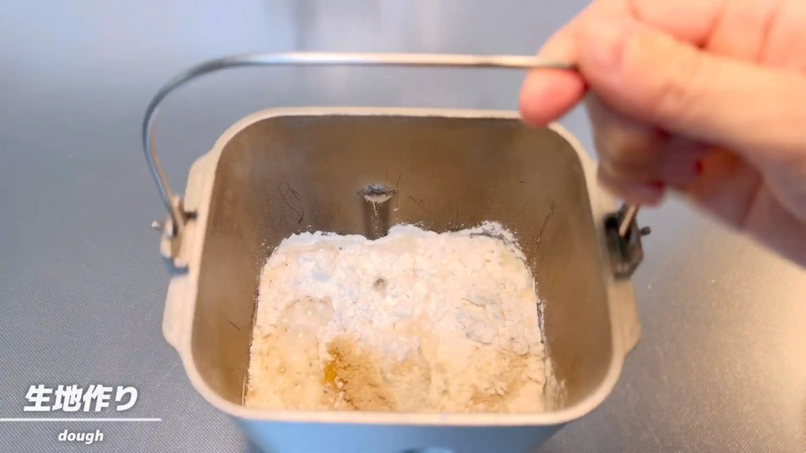
STEP 2
生地を取り出し、6分割する
生地を6等分します。できるだけ大きさをそろえておくと、焼き上がりもそろいやすくなります。
生地を6等分します。できるだけ大きさをそろえておくと、焼き上がりもそろいやすくなります。
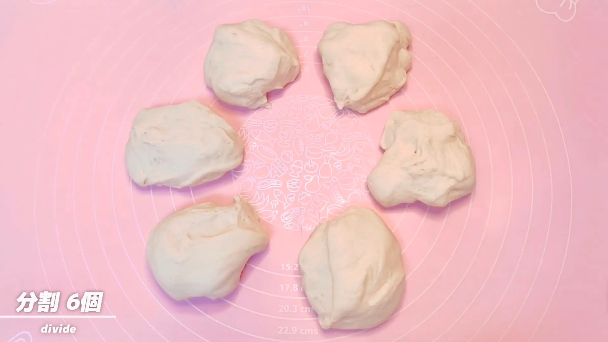
STEP 3
生地の上下を折りたたむ
生地を上下から中央に向かって折りたたみ、形を整えます。
生地を上下から中央に向かって折りたたみ、形を整えます。
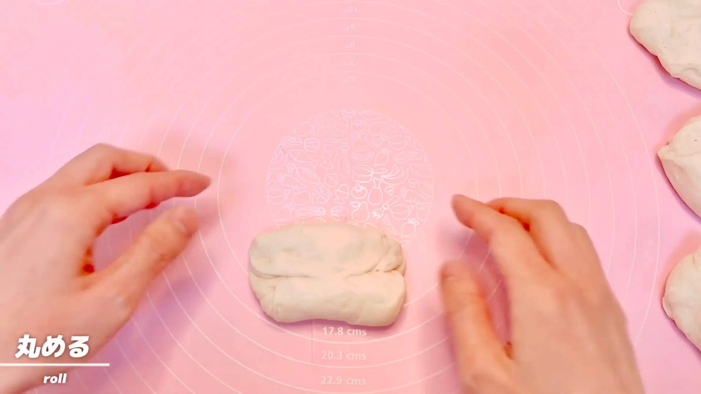
STEP 4
生地を閉じる
折りたたんだ生地の表面を張らせるようにしながら、合わせた端をしっかり閉じます。表面をなめらかに整えておくと、この後に生地を伸ばしやすくなります。
折りたたんだ生地の表面を張らせるようにしながら、合わせた端をしっかり閉じます。表面をなめらかに整えておくと、この後に生地を伸ばしやすくなります。
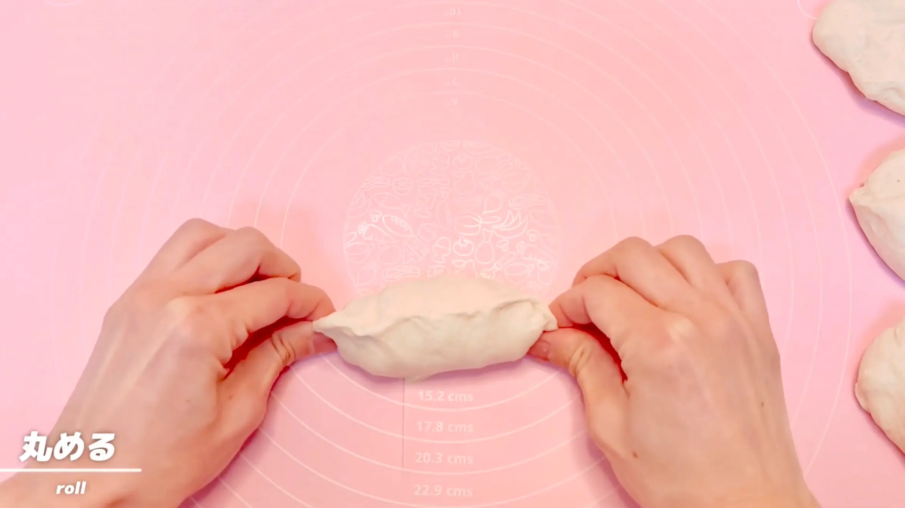
STEP 5
室温で10分おく
乾燥しないようにラップをして生地を休ませます。休ませることで生地がゆるみ、次の工程で無理なく伸ばしやすくなります。
乾燥しないようにラップをして生地を休ませます。休ませることで生地がゆるみ、次の工程で無理なく伸ばしやすくなります。
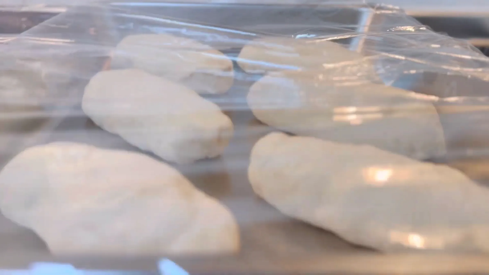
STEP 6
生地を50㎝の三角形に伸ばす（動画 [01:31]）
生地の中央から上側は横に広げるように伸ばし、下側は生地を少し引っ張りながら細く長く伸ばして、全体を50㎝ほどの三角形に整えます。上側は幅を広げすぎず、長さを出すように伸ばすのがポイントです。
生地の中央から上側は横に広げるように伸ばし、下側は生地を少し引っ張りながら細く長く伸ばして、全体を50㎝ほどの三角形に整えます。上側は幅を広げすぎず、長さを出すように伸ばすのがポイントです。
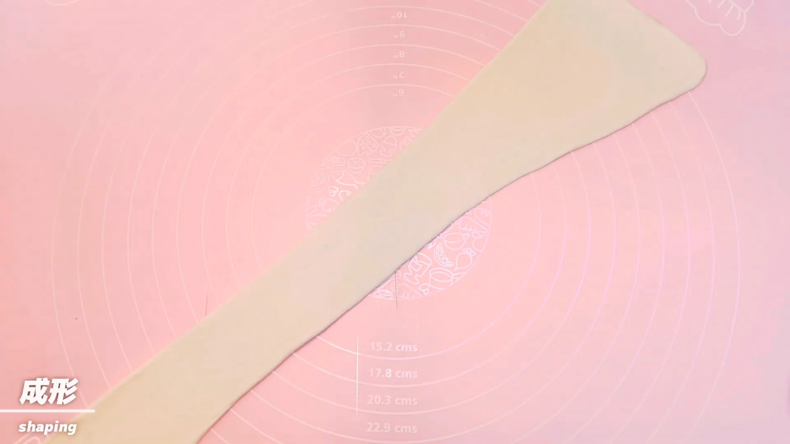
STEP 7
バターを包む（動画 [02:14]）
三角形に伸ばした生地の上部にバターをのせ、生地で包みます。バターがはみ出さないように、包んだ部分を閉じ、さらに両サイドの生地を中央に折りたたんで、しっかり閉じます。
三角形に伸ばした生地の上部にバターをのせ、生地で包みます。バターがはみ出さないように、包んだ部分を閉じ、さらに両サイドの生地を中央に折りたたんで、しっかり閉じます。
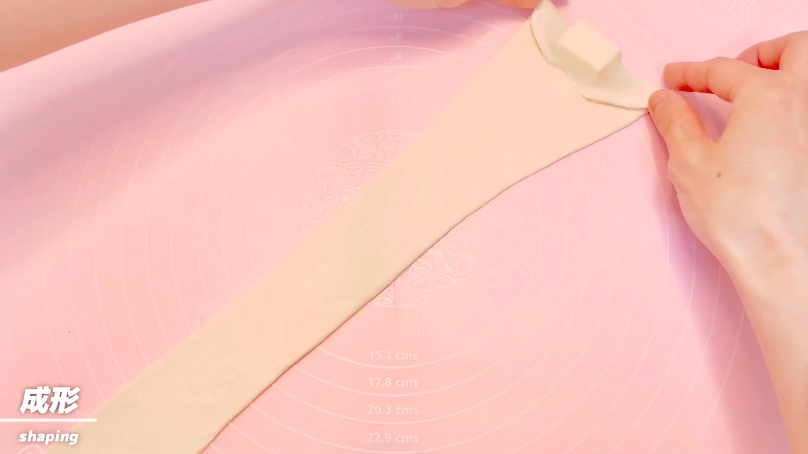
STEP 8
生地を巻き、天板にのせる
生地を上から下へ向かって巻き、巻き終わりを下にして天板にのせます。生地をきつく巻きすぎず、形を整えながら巻いていきます。
生地を上から下へ向かって巻き、巻き終わりを下にして天板にのせます。生地をきつく巻きすぎず、形を整えながら巻いていきます。
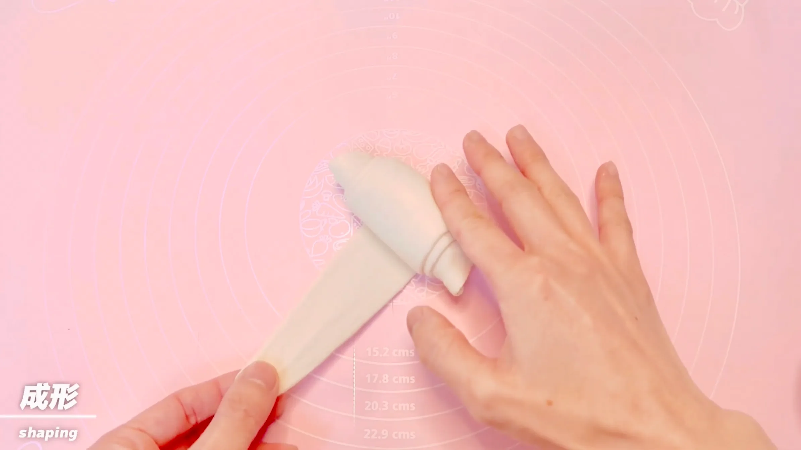
STEP 9
室温で60分おく
乾燥しないようにラップをして二次発酵させます。60分を目安に、生地がひとまわり大きくなり、ふっくらとしたら次の工程へ進みます。
乾燥しないようにラップをして二次発酵させます。60分を目安に、生地がひとまわり大きくなり、ふっくらとしたら次の工程へ進みます。
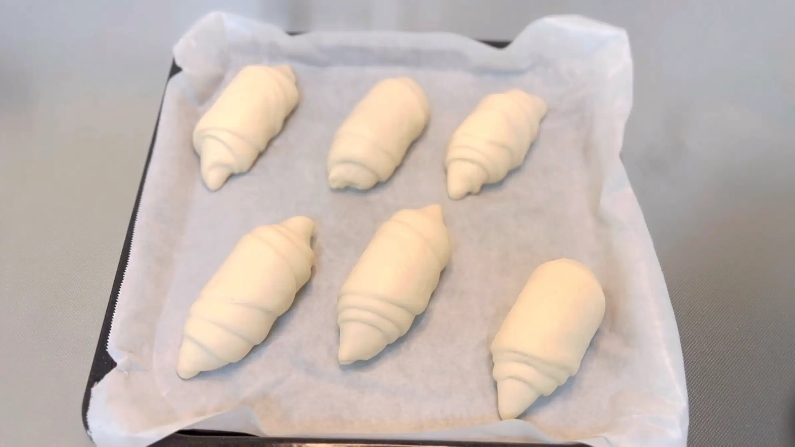
STEP 10
オーブンを220℃に予熱する
焼成前にオーブンを220℃に予熱しておきます。焼成温度までしっかり温めておくことで、生地を入れたときから高温で焼き始められます。
焼成前にオーブンを220℃に予熱しておきます。焼成温度までしっかり温めておくことで、生地を入れたときから高温で焼き始められます。
STEP 11
霧吹きをして塩をかけ、オーブンに3分入れる
生地の表面に霧吹きをして塩をふり、予熱したオーブンに入れます。表面に水分を与えた状態で焼き始めることで、生地が膨らむ間に表面が伸びやすくなり、ひび割れのあるパリッとした焼き上がりになります。ここではオーブンのスイッチを入れず、そのまま3分待ちます。
生地の表面に霧吹きをして塩をふり、予熱したオーブンに入れます。表面に水分を与えた状態で焼き始めることで、生地が膨らむ間に表面が伸びやすくなり、ひび割れのあるパリッとした焼き上がりになります。ここではオーブンのスイッチを入れず、そのまま3分待ちます。
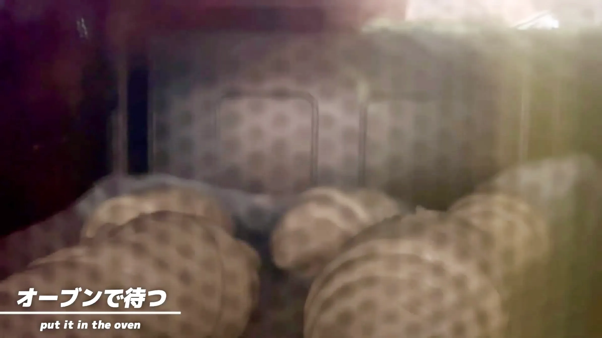
STEP 12
オーブン220℃で10分、200℃で13分焼く
3分待った後、220℃で10分焼き、続けて200℃に下げて13分焼きます。表面がしっかり色づき、香ばしく焼き上がったら完成です。焼き時間は目安とし、ご家庭のオーブンに合わせて調整してください。
3分待った後、220℃で10分焼き、続けて200℃に下げて13分焼きます。表面がしっかり色づき、香ばしく焼き上がったら完成です。焼き時間は目安とし、ご家庭のオーブンに合わせて調整してください。
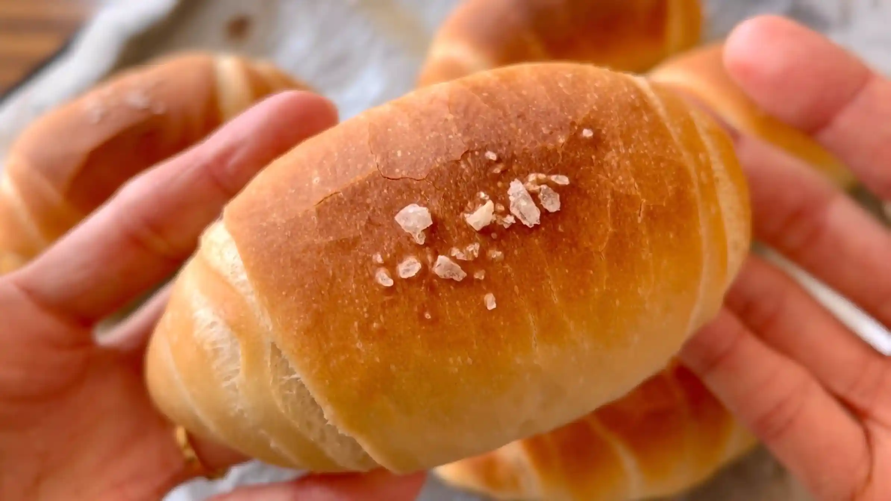
動画でチェック
おいしく作るためのワンポイントコラム
スチーム機能のない一般的なオーブンでも、表面をピキピキに割ることができます。ポイントは、焼く直前にびしゃびしゃになるくらい霧吹きをして、オーブンに入れてから3分待つこと。
表面のひび割れ（クラック）と、プレッツェルのように香ばしく引き締まった歯ごたえが魅力の『クラックロール』を、おうちで作ります。独特のカリッとした食感と綺麗なひび割れを引き出すための3つのコツをまとめました。
① 生地のコツ
今回のレシピでは、パンらしいふんわり感だけでなく、歯ごたえと軽さを生み出すために強力粉に薄力粉をブレンド して生地を仕込むのがポイント。薄力粉を混ぜることでグルテンの形成が適度に抑えられ、歯切れの良さと噛み応えのある絶妙な食感を生み出します。
② 成形のコツ
バターをしっかりと閉じ込めるために、まずは生地を長さ50cmほどの細長い二等辺三角形に伸ばすことから始めます。底辺にバターを置いたら、両端を生地で優しく包み込み、強くもなく弱くもない加減（つまり普通くらいですね！）で転がすように巻いていくのが綺麗な形に仕上げるコツです。こうすることで、発酵時の生地の破れを防ぎ、均一なボリュームに膨らんでくれます。
③ 焼成のコツ
表面をピキピキに割るためには高温とスチームが不可欠ですが、スチーム機能がない場合は焼く直前に 霧吹きをたっぷりかける（びしゃびしゃになるくらい）のがコツです。さらに、オーブンに入れてすぐには焼かず3分間待ってから加熱をスタートすることで、表面の水分が程よく馴染んで生地の急激な乾燥を防ぎ、香ばしいクラスト（皮）と心地よいひび割れを生み出すことができます。
バターは焼くとどうしても溶け出してきますが、底に染み出たバターが揚げ焼き状態になってカリカリになった部分や、ちぎった中からじゅわっと広がる濃厚なコクは格別な味わいです！ぜひ作ってみてください！
表面のひび割れ（クラック）と、プレッツェルのように香ばしく引き締まった歯ごたえが魅力の『クラックロール』を、おうちで作ります。独特のカリッとした食感と綺麗なひび割れを引き出すための3つのコツをまとめました。
① 生地のコツ
今回のレシピでは、パンらしいふんわり感だけでなく、歯ごたえと軽さを生み出すために強力粉に薄力粉をブレンド して生地を仕込むのがポイント。薄力粉を混ぜることでグルテンの形成が適度に抑えられ、歯切れの良さと噛み応えのある絶妙な食感を生み出します。
② 成形のコツ
バターをしっかりと閉じ込めるために、まずは生地を長さ50cmほどの細長い二等辺三角形に伸ばすことから始めます。底辺にバターを置いたら、両端を生地で優しく包み込み、強くもなく弱くもない加減（つまり普通くらいですね！）で転がすように巻いていくのが綺麗な形に仕上げるコツです。こうすることで、発酵時の生地の破れを防ぎ、均一なボリュームに膨らんでくれます。
③ 焼成のコツ
表面をピキピキに割るためには高温とスチームが不可欠ですが、スチーム機能がない場合は焼く直前に 霧吹きをたっぷりかける（びしゃびしゃになるくらい）のがコツです。さらに、オーブンに入れてすぐには焼かず3分間待ってから加熱をスタートすることで、表面の水分が程よく馴染んで生地の急激な乾燥を防ぎ、香ばしいクラスト（皮）と心地よいひび割れを生み出すことができます。
バターは焼くとどうしても溶け出してきますが、底に染み出たバターが揚げ焼き状態になってカリカリになった部分や、ちぎった中からじゅわっと広がる濃厚なコクは格別な味わいです！ぜひ作ってみてください！


表面のパリパリとしたひび割れと、じゅわっと溢れるバターが魅力の『クラックロール』のレシピです！独特の歯ごたえを持つ生地にバターを巻き込み、香ばしいロールパン型に焼き上げます。コラムでは「生地のコツ」「成形のコツ」「焼成のコツ」の3つのポイントをご紹介します。